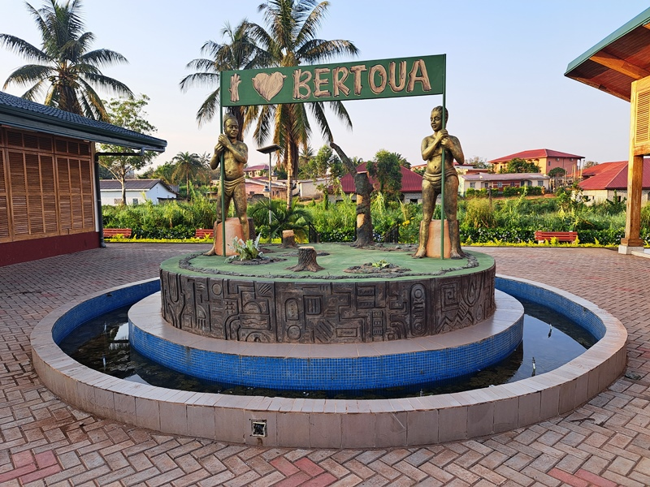
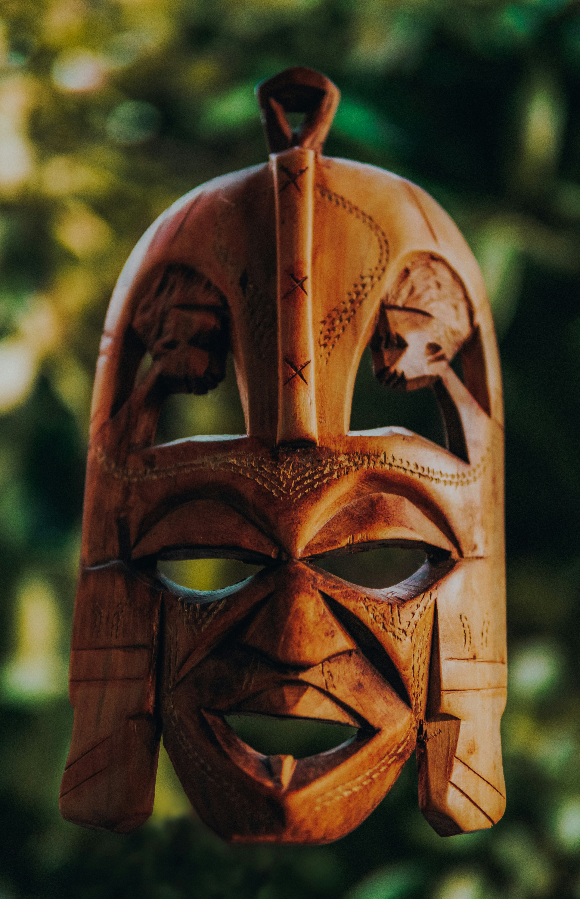
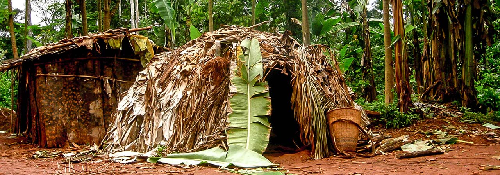

Why Bertoua?
Bertoua, city of natur wonder
Think of Bertoua and the image that immediately comes to your mind is that of breathtakingly beautiful beaches, lush green jungles with exotic wildlife, majestic temples, a vibrant nightlife, delicious cuisine, pulsating cities and a rich traditions and rituals serving as a reminder of its glorious past. Bertoua is all that, and a lot more.
Bertoua (actually: Gamane) is an old central town of the Gbaya and was the seat of a chiefdom in pre-colonial times, which was influenced early on by the neighboring Islamic empires to the north. The town came under German sovereignty after 1903. During this time, however, the district administration was based in Dume, further to the southwest. It was only after the First World War, under French mandate rule, that Bertoua became the administrative center for East Cameroon.
When you have the opportunity to join a Baka (pygmies Folks) family on their daily routine such as a hunt, fishing trip, or gathering honey. You certainly should do it. This is back to the basic way of life. You will have the opportunity you join one of the still primitive human family at the dinner table and to learn from their way of life.
There are many adventurous things to do during your visit to Bertoua. The list includes white water rafting, Snorkelling, Rock Climbing, Canoeing, Skydiving and the list is never-ending.
Culture-Food-Entertainment
Best Things in Bertoua
Local Market
One of the highlights is visiting a local Market and discovery the fabric stalls, where you can find an array of vibrant, handwoven textiles. These fabrics, often called ankara or kitenge, are adorned with bold patterns and bright colors, reflecting the culture and traditions of the region.
Where?:
There is a lot of small market in the region. One of the popular ones is Ndoumba Market, where you can find a brighter diversity of local fabric and much more...
What i like about it
These fabrics, often called ankara or kitenge, are adorned with bold patterns and bright colors, reflecting the culture and traditions of the region. As you wander through the market, you might choose a piece of fabric to take home. These fabrics are used to make various items, from stylish clothing like dresses and shirts to headscarves and skirts.The fabric holds cultural significance and is worn during special occasions like weddings, festivals, or ceremonies. Buying local fabric not only supports artisans but also connects you to the rich heritage of the area, allowing you to carry a piece of the culture with you.
Delicious Stew bowl
Experience authentic culinary delights Veggie/meat stew. The dish is often served with fufu, a starchy side made from yam, plantains, or cassava, which perfectly complements the thick, hearty stew. This speciality is often eated at family gathering.
Where?:
There is some places you can find local food. A must-visit for any traveler is "Chez Minette Restaurant", situated in the heart of Bertoua, where you can celebrate many other local flavors and warm hospitality.
What i like about it
This is a celebration of local flavors, a traditional dish crafted with fresh, locally-sourced ingredients. A savory stew with added grilled meats, each bite reflects the unique culinary heritage of the region. Vegetarians will also find this delightful option, when cooked without meat. Showcasing what highlight the diverse produce available in the region.

Entertainment
In the heart of the city, there is many vibrant local spots where you can immerse yourself in the rhythmic sounds of the balafon, a traditional West African percussion instrument that resonates with a deep, melodic energy.
Where?:
Le Zürikoi is one of the local place.
What i like about it
During the day, the atmosphere is alive with the music of skilled musicians playing the balafon, often accompanied by drums and other local instruments. It's the perfect place to feel the pulse of African culture, with locals gathering to enjoy the rhythms that tell stories of history, love, and celebration. As the sun sets, the city nightlife comes alive, and the music scene shifts to more contemporary sounds. Bars and clubs fill with lively Afrobeat, highlife, and reggae beats, and you can dance into the night to the infectious rhythms that echo through the streets. From intimate venues to bustling nightclubs, this part of the city offers a perfect blend of cultural music by day and lively nightlife by night, making it a must-visit for anyone looking to experience the soul of the city.
Gallery
Some Fotos of Bertoua

|
|  |
|  |
|  |